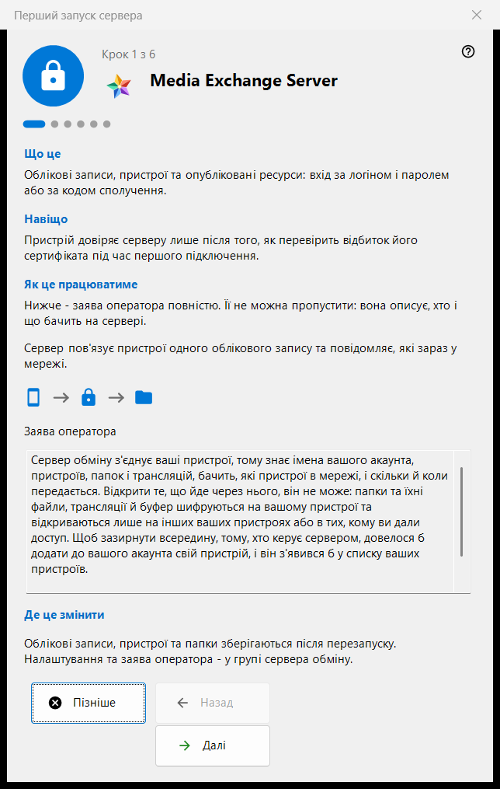
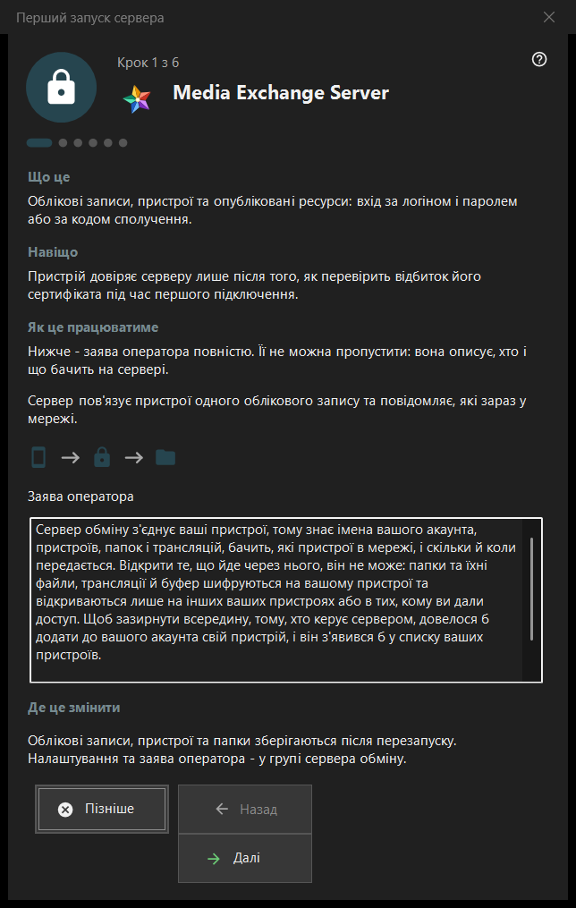

Перший запуск сервера
Призначення
Посібник першого запуску для групи сервера обміну в Share Manager. Він пояснює, чим стає комп'ютер, показує заяву оператора, задає порти, адресу для клієнтів і перший обліковий запис та завершується станом сервера. Відкривається лише тоді, коли сервер обміну присутній і ввімкнений.


Порядок дій
- Прочитайте заяву оператора на першій сторінці.
- Перегляньте порти та правило брандмауера.
- У серверній редакції без служби вирішіть, що робити зі службою Windows.
- Заповніть адресу для клієнтів.
- Створіть перший обліковий запис.
- Перевірте відбиток сертифіката й натисніть «Готово».
Елементи вікна
Сторінки та кнопки
У нижньому рядку показано «Крок N з M»; «Назад», «Далі» та «Пізніше» працюють як у будь-якому майстрі, а «Готово» на останній сторінці відкриває групу сервера обміну в менеджері. Сторінку можна пропустити без змін: тоді сервер залишається вимкненим або таким, яким був.
Заява оператора
Повна заява про те, хто що бачить на сервері. Її не можна пропустити. Сервер з'єднує пристрої одного облікового запису й повідомляє, які з них у мережі.
Порти та брандмауер
Порт зустрічі пристроїв і діапазон портів для сторонніх клієнтів. Пристрої мають знати порт сервера, тому зміни діють лише для нових кодів. Правило брандмауера належить програмі, тож зміна порту не потребує нового правила. Ці значення зберігаються в групі сервера обміну.
Служба Windows
Показується лише у серверній редакції, де служби ще немає. Служба тримає сервер доступним, коли ніхто не увійшов у систему. Прапорець лише запам'ятовує вашу згоду: служба реєструється після появи першого облікового запису, з одним запитом прав адміністратора, а до того нічого не встановлюється. «Зареєструвати як службу..» у групі обміну робить те саме пізніше.
Адреса для клієнтів
«Адреса для клієнтів (хост:порт):» - це адреса, за якою інші пристрої звертаються до цього комп'ютера. «Запропонувати локальну адресу» заповнює поле лише тоді, коли її натиснути. Порожня адреса залишає чисто локальний перший запуск коректним, але приховує трансляції та підключення до папок від інших пристроїв.
Перший обліковий запис
Обліковий запис, з яким входить перший пристрій. Виберіть «Створити пароль автоматично» або «Ввести свій пароль»; «Підключити цей комп'ютер до облікового запису» приєднує до нього цей комп'ютер. «Далі» створює обліковий запис, запускає сервер і перевіряє сертифікат. Пароль показується один раз, у наявному діалозі, і не зберігається на цьому ПК. Збій після створення облікового запису його не видаляє.
Сервер готовий
Остання сторінка вказує, де записано адресу, логін і відбиток сертифіката, та пропонує «Скопіювати відбиток» і «Рядок підключення і QR-код..». Пристрій довіряє серверу після того, як під час першого підключення перевірить відбиток. Посилання «Підключити телефон (довідка)» та «Опублікувати першу папку (довідка)» ведуть на відповідні сторінки довідки.
Налаштування менеджера · Налаштування спільного доступу SFTP · Налаштування сервера обміну